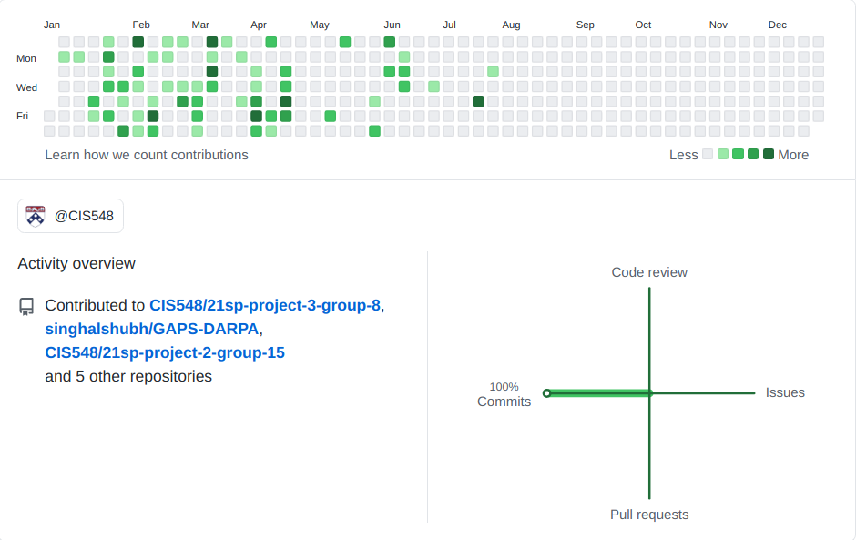
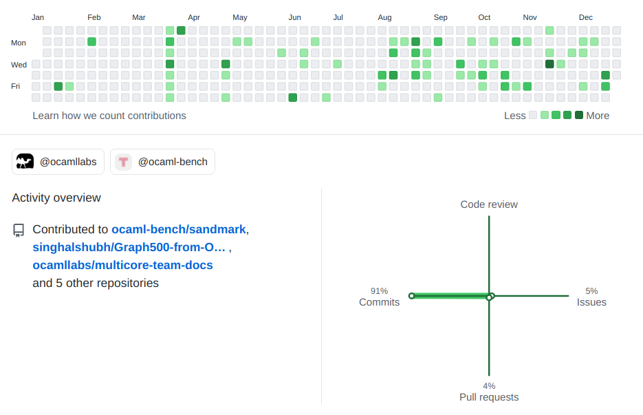
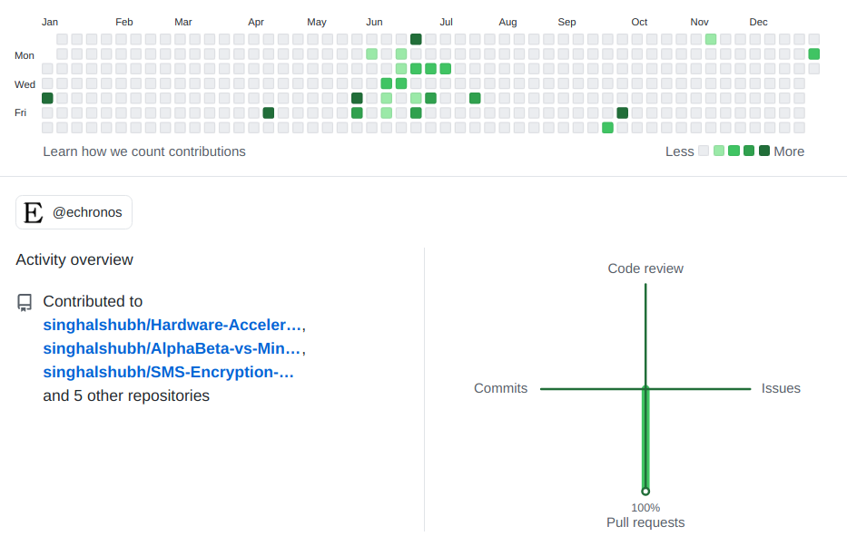

2021
Research Assistant
University of Pennsylvania, United States of America
2. Working towards Master's Thesis with the latest update of integration of loss, delay and restart resilience to the system. 3. Stay tuned for latest updates here!
2020
Research Software Developer
OCaml Labs, UK , Indian Institute of Technology Madras, India
2. Designing Hashmap, CSR for sparse matrix, various lockfree structures for handling concurrent access and other performance choices, led to a significant speedup of 20x in concurrent search kernel, 4x in Kronecker graphs and an over all 90.93% improvement in execution time of the sequential version of the kernels across the application on Intel(R) Xeon(R) Gold 5120 CPU @ 2.20GHz(24 core).
3. Responsible for fixing the benchmark related GitHub issues on sandmark.
Research Assistant
International Institute of Information Technology, Hyderabad, India
2. Designed a formal proof for obtaining the maximum staleness factor under various freshness and thermal constraints. Developed a simulator in C++ for demonstrating the correctness of the proof and obtaining the variations(graphs) of schedulability with CPU utilisation, freshness and temperature bounds.
3. Lead a team of 3, to ensure productive development and preliminary research.
2019
Research Assistant
University Of Southern California, Los Angeles, California
2. Formulated a tool AccEx to profile a program according to the user defined input of execution time. Reduced the complexity of mapping every call’s address to its function name in GPROF by assigning a machine independent attribute - call id, for every call in a program to replace the default execution time with the user-defined input.
3. Observed a pattern of exponential decrease in total execution time for linear decrease in time of propagate() function allowed up-to 76% as, the other function’s time outstrips the linear decrease, nullifying the effect of parallelism.
Research Assistant : Publications
Indian Institute of Technology Madras, India